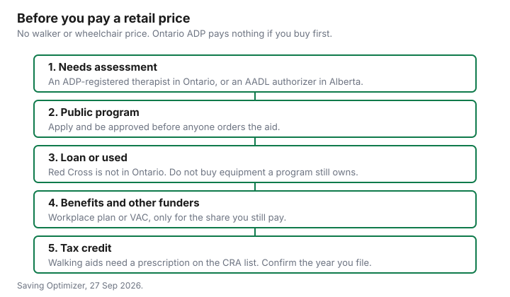

Healthcare · Canada
Paying for Walkers, Wheelchairs and Mobility Aids in Canada: ADP, Loans and Used Equipment
A short-term need and a long-term disability are different bills, and families often pay the long-term price for the short-term need. Ontario’s Assistive Devices Program will not pay if you buy first. The Canadian Red Cross loan program does not operate in every province. This page puts those routes in order, then the tax credits on whatever you still pay. No walker or wheelchair shelf price is listed here, so none is printed. This is not medical advice and not a product ranking.
Key takeaways
- Ontario ADP, mobility page updated 10 Jul 2025, pays 75 percent of the approved price for listed mobility aids. You pay 25 percent. The registered business cannot charge more than the ADP price for the approved device. Apply before you buy.
- Wheeled walkers for adults are covered. Non-wheeled walkers, standard canes, transport chairs, ramps, and most rentals are not. Income is not the test. A device needed for less than six months is not the test either.
- Red Cross HELP operates in British Columbia, Alberta, New Brunswick, Prince Edward Island, Nova Scotia, Newfoundland and Labrador, and Yukon. It is not an Ontario program. Loan length and any donation are local.
- Alberta AADL is a 25 percent cost share up to $500 per individual or family per year, unless you are exempt. Recycled wheelchairs from its recycle vendor are not yours to sell.
- Walking aids need a prescription to be a medical expense, on the CRA list. Wheelchairs are listed as well. The home accessibility tax credit can sit beside a renovation that also qualifies as a medical expense. You can claim up to $20,000 of eligible expenses a year on line 31285.
Public funding: Ontario's ADP and other provinces' equipment programs (sourced)
Ontario’s mobility-aids page says you qualify if you are an Ontario resident with a valid health card and a disability that requires a mobility aid for six months or longer. Income is not considered.
You do not qualify if the Workplace Safety and Insurance Board already supports the same aid, or if you are a Group A veteran already supported by Veterans Affairs Canada for the same aid. Covered devices include manual wheelchairs, power wheelchairs, power scooters, power add-ons, positioning devices used with a wheelchair, forearm crutches, wheeled walkers for adults, and pediatric walkers, standers, and strollers. Not covered: all-terrain vehicles, non-wheeled walkers, positioning devices that are not for a wheelchair, most rentals, recliner chairs, standard canes, transport chairs, adaptive tricycles, wheelchair lifts, and wheelchair ramps. The general ADP page adds a longer not-covered list that includes grab bars, stair lifts, hospital beds, and bath benches. A bathroom aid is not a mobility-aid application.
The registered business bills ADP for 75 percent. You pay 25 percent when you receive the aid, plus items the program does not cover, such as batteries for a power wheelchair. ADP sets the price. The business cannot charge more than that price for the approved device. It can charge less. People receiving Ontario Works, the Ontario Disability Support Program, or Assistance for Children with Severe Disabilities can be covered at 100 percent. The application is four steps: an occupational therapist or physiotherapist registered with ADP authorizes the device, you complete the form with them, you choose a registered business, and that business submits the form. Ontario aims to review the application within eight weeks. If you order or buy before those steps are done, you pay the full cost. Replacements are possible if your condition or size changes, or if the aid is worn out, out of warranty, and cannot be repaired at a reasonable cost. ADP does not replace a lost aid or pay for damage from misuse. The general program page says ADP does not cover repair costs. A high-technology power wheelchair, meaning power dynamic tilt or recline, has to be bought from the Central Equipment Pool, which the page says sells at a discounted price and gives rebates when equipment is returned.
Alberta is the second province covered in full. The AADL benefits page says walkers, walking aids, and manual and power wheelchairs are covered, that some of that equipment might not be new, and that Albertans pay 25 percent of the benefit cost to a maximum of $500 per individual or family per year. Low-income Albertans and people on income assistance do not pay the share. You must be assessed and authorized before you buy. The program does not reimburse a purchase you made first. The client guide dated November 2024 gives one frequency example: funding for one walker every four years, with early replacement considered if your condition changes. The benefits page now points to the product list for the limit that applies, so treat the four-year sentence as that booklet’s example, not as a figure to paste onto a 2026 invoice without checking the list. The hearing-aid guide is the same Ontario program for a different device. Do not mix the $500-per-side hearing cap with the mobility percentage.
Short-term loans: Red Cross and community loan cupboards
The Canadian Red Cross Health Equipment Loan Program page says HELP operates in British Columbia, Alberta, New Brunswick, Prince Edward Island, Nova Scotia, Newfoundland and Labrador, and Yukon. Ontario is not on that list.
A basic short-term loan is described as generally three months or less, for recovery, mobility issues, an earlier discharge, or palliative care at home, and it requires a referral from a health-care professional. Community programs on the same page are narrower: three-month loans in Prince Edward Island, Nova Scotia, and Newfoundland and Labrador; New Brunswick loans for as long as the equipment is needed; a long-term loan of wheelchairs and bathing aids in B.C.’s Lower Mainland for chronic but stable conditions. Alberta’s own HELP page says to call to confirm what is in stock, and it names wheelchairs, walkers, bath seats, crutches, and canes among the aids. Yukon’s page says the Whitehorse short-term loan is on a donation basis and is generally for three months or less. “Free” is not what the national page promises in every province. Ask the provincial office what, if anything, you pay.
Other cupboards were not inventoried. The general ADP page names Easter Seals Ontario, The War Amps, and Lions Clubs as places to ask if you cannot pay your 25 percent share. It does not say what they will pay. A local loan cupboard that is not the Red Cross may exist in Ontario. This guide does not cite one, so it does not promise a warehouse of walkers. If the need is under six months, ADP is the wrong first door anyway, because the disability has to require the aid for six months or longer. Start with a loan where a loan exists. The uninsured-fees guide is a different kind of clinic bill. It will not lend you a walker.
Buying used safely: what to inspect and what not to buy used
The safety question this guide can answer is ownership, not a brake-by-brake inspection. Alberta’s page says AADL keeps ownership of recycled beds, lifts, pediatric equipment, and wheelchairs supplied by Eco Medical.
That equipment is not for resale. It goes back if it is no longer needed, if it is being replaced, if the person moves out of Alberta, or if they become ineligible. Buying that chair from a stranger is buying something the program says is not theirs to sell. Ontario does not describe a matching recycle pool for ordinary wheelchairs on the mobility page. It does say that if you buy before the ADP steps are finished, you pay the entire cost, and that most rentals are not covered. A used chair you buy privately is not an ADP-funded chair unless the authorization happens first and the seller is a registered business charging no more than the ADP price.
Ask three questions the pages support. Does the seller own it, and is a public program still the owner? Has an ADP-registered therapist, or an AADL authorizer, said this device is the one you need? What will you pay later for batteries, repairs, and parts the program will not cover? No regulator publishes a checklist of tyres, cushions, and electronics in the sources cited here, so this page does not invent one. If the device was issued to someone else under a program, the right next call is the program, not a classified ad. The turning-65 guide is when other public benefits start. It does not make a used chair eligible.
Workplace benefits, VAC and other funders
A workplace plan may have a medical-supply or durable-equipment line. This guide does not quote a booklet with a dollar maximum, so none is printed.
Ask whether the plan pays a wheelchair or a walker, whether it needs a prescription or a pre-approval, and whether it coordinates with ADP or AADL. If the public program pays 75 percent, the plan may be asked for part of the remaining 25 percent. Get that in writing before you assume it. Do not claim the same dollar from two payers.
Veterans Affairs is an exclusion as much as a funder, on the pages cited here. A Group A veteran who already qualifies for or receives VAC support for the same mobility aid does not qualify for Ontario ADP for that aid. The same sentence appears for hearing devices. This page does not cite a VAC fee schedule for walkers or wheelchairs, so it does not say what VAC pays. Ask VAC before you apply to ADP, because the wrong order can block the provincial share. WSIB is the other exclusion: if WSIB already supports that aid, ADP does not. The long-term care guide is the bill if the right setting is a home, not a device. Ontario Health atHome places people in long-term care. A walker does not decide that application.
Tax: medical expense tax credit and the home accessibility tax credit
CRA’s Medical Expenses 2025 lists walking aids as devices designed only to help a person with a mobility impairment, and the prescription column is Yes. Wheelchairs and wheelchair carriers are on the list.
Crutches are on the list. A scooter used instead of a wheelchair is on the list. Amounts a public program or an insurer paid are not yours to claim a second time. The threshold examples in that guide use the lesser of 3 percent of line 23600 or $2,834. The medical expense guide is how the credit is calculated. The tax-credits guide is the wider checklist. This paragraph is only the mobility lines. Confirm the threshold for the year you file. Not tax advice.
A renovation is a second credit. Disability-Related Information 2025 says you may claim the home accessibility tax credit if you own a home in Canada and paid for eligible renovations, up to $20,000 a year on line 31285. You qualify if you are 65 or older or eligible for the disability tax credit, and you may claim it for a dependent in some cases. The work has to be a permanent part of the home and either help the person get in, move, or function, or reduce the risk of harm. The same guide says an expense that is both a home-accessibility expense and a medical expense can be claimed as both. Medical Expenses 2025 says renovation costs for access because of a severe and prolonged mobility impairment can qualify as medical expenses, and it points at the home accessibility credit for the second claim. ADP’s not-covered list includes ramps and home renovations, so the program and the credit are not the same door. Keep the receipts and, where the medical-expense rule needs it, the prescription or certification. The credit rate on the $20,000 is not printed here, because the worksheet that applies the rate is not covered.
Funding order-of-operations
Use this order so you do not buy a device a program would have funded, or buy a device a program still owns. Stop at the first row that fits. Then use the later rows only for the share you still pay.
| Source | Who qualifies | What it pays | How to apply | Where to read it |
|---|---|---|---|---|
| Ontario ADP | Ontario health card, aid needed 6 months or longer. Not WSIB or a Group A veteran already funded for the same aid. | 75 percent of the approved price. You pay 25 percent. 100 percent if you are on Ontario Works, ODSP, or Assistance for Children with Severe Disabilities. | ADP-registered occupational therapist or physiotherapist, then a registered vendor, before you buy. | ontario.ca/page/mobility-aids, updated 10 Jul 2025. |
| Alberta AADL | Assessment by an authorizer. No income test to be eligible. Cost-share exemptions exist for low income and income assistance. | 25 percent cost share, capped at $500 per individual or family per year, unless exempt. November 2024 guide: one walker every four years as an example. | Authorize first. Buy from an approved vendor. The program does not repay a purchase you made earlier. | alberta.ca/aadl-benefits-covered, as of 27 Sep 2026. |
| Red Cross HELP | A health professional refers you. Not offered, on the national page, in Ontario. | A loan, often about three months, longer in some Atlantic and Lower Mainland programs. Yukon describes a donation, not a national “free.” | Provincial HELP page, referral form, and a call to confirm stock. | redcross.ca health equipment loan program, as of 27 Sep 2026. |
| Workplace plan or VAC | Whatever the booklet or VAC file says. VAC support for the same aid blocks Ontario ADP for a Group A veteran. | Not printed. No maximum is listed here. | Ask before you buy, and do not double-claim a dollar ADP already paid. | Your booklet, and VAC. Not a figure on this page. |
| Tax credits | Walking aids need a prescription on the CRA list. Home accessibility: age 65 or the disability tax credit, for a qualifying renovation. | A credit on expenses above the medical threshold, and up to $20,000 of eligible renovation expenses on line 31285. Not a refund of the whole invoice. | Keep receipts. Claim on the return. Confirm the year’s threshold. | Medical Expenses 2025 and Disability-Related Information 2025. |

Sources
- Ontario, “Mobility aids,” updated 10 Jul 2025. Eligibility, the 75 percent share, covered and excluded devices, the four application steps, the eight-week review aim, and the Central Equipment Pool.
- Ontario, “Assistive Devices Program,” updated 26 Mar 2026. Repairs are not covered. The not-covered list includes ramps, grab bars, and hospital beds. Easter Seals, The War Amps, and Lions Clubs are named for people who cannot pay their share.
- Alberta, “AADL – Benefits covered,” as of 27 Sep 2026. Cost share, ownership of recycled wheelchairs, and the rule against buying first. Client guide, November 2024, for the one-walker-every-four-years example.
- Canadian Red Cross, Health Equipment Loan Program, as of 27 Sep 2026, plus the Alberta and Yukon HELP pages. Provinces named above. Ontario is not listed.
- Canada Revenue Agency, Medical Expenses 2025 and Disability-Related Information 2025. Walking aids, wheelchairs, and the home accessibility limit of $20,000. No retail device price is listed here.
Frequently asked questions
Does ADP pay for walkers?
It pays 75 percent of the approved price for a wheeled walker for an adult, if you qualify and you apply before you buy. You pay the other 25 percent, unless Ontario Works, ODSP, or Assistance for Children with Severe Disabilities covers the full approved price. Non-wheeled walkers and standard canes are on the not-covered list. The need has to be for six months or longer, and a registered business cannot charge more than the ADP price for the approved device.
Can I borrow a wheelchair for free?
The Red Cross runs a loan program, not a Canada-wide free cupboard. HELP is listed for British Columbia, Alberta, New Brunswick, Prince Edward Island, Nova Scotia, Newfoundland and Labrador, and Yukon, not for Ontario. Basic loans are generally three months or less, and Yukon’s page describes a donation. Ask the provincial office whether you pay anything and get a health-professional referral, and do not assume a loan is free because the national page does not print a fee.
Is it safe to buy used mobility equipment?
Do not buy equipment a public program still owns. Alberta says recycled wheelchairs from Eco Medical are not for resale and must be returned. In Ontario, a chair you buy before ADP authorization is a chair you pay for in full, and most rentals are not covered. Ask who owns it and whether an ADP-registered therapist or an AADL authorizer says it is the device you need, because no mechanical inspection list is cited here and this page does not invent one.
Can I claim a walker on my taxes?
Medical Expenses 2025 lists walking aids, with a prescription required, and it lists wheelchairs. You claim what you paid, not the share ADP or an insurer already paid, and only the amount above the threshold, the lesser of 3 percent of net income or $2,834 in that guide’s examples. A qualifying renovation can also be a home accessibility expense, up to $20,000 on line 31285, and the same expense can be claimed as both when it qualifies. This is not tax advice.
Does VAC fund mobility aids?
This page does not cite a Veterans Affairs fee schedule, so it does not say what VAC pays. It does say that a Group A veteran who already receives VAC support for the same mobility aid does not qualify for Ontario ADP for that aid. Ask VAC before you apply to ADP. The Workplace Safety and Insurance Board is a similar exclusion when it already supports the same aid.
Researched and drafted with AI assistance and fact-checked against official Canadian sources. How we create content.